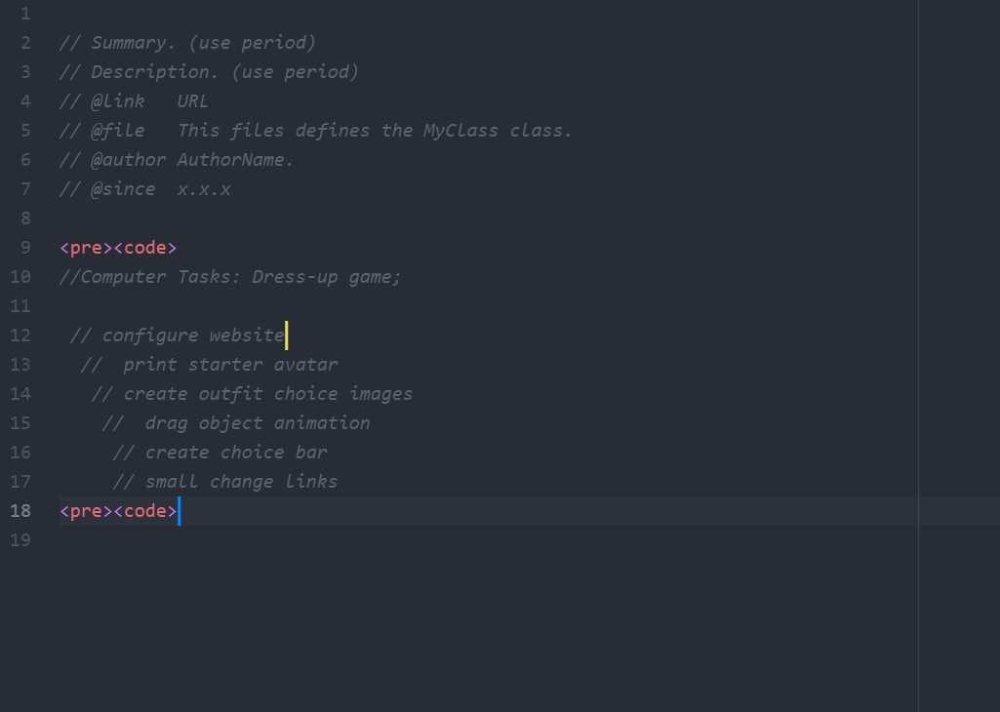

Everyday Tasks
Computer Tasks: Dress-up game;
Challenges
Alli:
This lab was a lot easier than lab 3, I would say the main challenge was just coming up with what we wanted to learn to do with javascript, and then breaking that down and thinking about the components that go into that process. I would say we are getting a lot more comfortable with atom though which feels good.
Angela:
I think the challenges that I had was that I was over thinking the assignment. Due to my trauma of Lab 3, I believed that we were suppose to do a lot more than what was neccessary for us. Basically I was having an internal battle with myself.
Problems
Alli:
The problems we ran across during this lab is just knowing where to put the pre-code command, whether it's on our html or our javascript file. It feels like we were leading up to this in lecture but didn't quite get there.
Angela
THe main problem that I had was deciding whether to put pre-code within the HTML file or in the javascript file. I did a lot of reading, but I wasn't able to figure out where exactly is needed to go. I also couldn't defend why I believed it belonged in html aside becuase I didn't have enough knowledge on the subject.
Results
Alli:
The results are good, we opened our javascript and got this page to work and look good without any issues.
Angela:
We were able to put in our lists of task within our website and everythig looks good. 